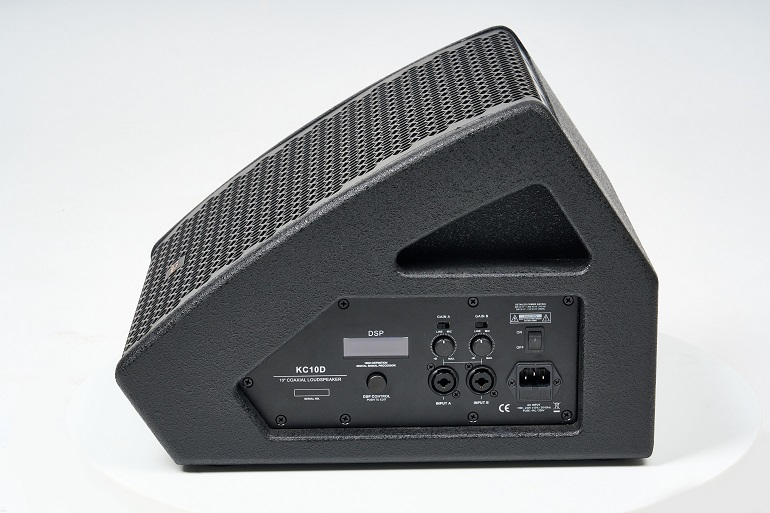
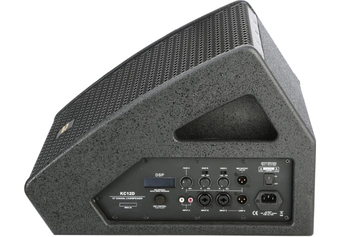

동축 드라이버와 Class D 앰프, 48kHz/24bit DSP를 하나의 콤팩트 캐비닛에 통합한 액티브 모니터 시리즈. KC10D · KC12D · KC15D 3개 모델로 구성되어 90°×90° 균일 커버리지와 53° 듀얼 모드(스테이지 모니터 / 근접 확성)를 모두 지원합니다.



동축 드라이버, Class D 앰프, 48kHz/24bit DSP를 하나의 콤팩트 캐비닛에 통합한 액티브 모니터. 스테이지 모니터링과 근접 확성 양쪽 모드를 모두 지원합니다.
KC 시리즈는 10인치(KC10D)·12인치(KC12D)·15인치(KC15D) 3개 모델로 구성되어 있습니다. 모든 모델은 LF 드라이버와 1.73" HF 컴프레션 드라이버를 동축으로 배치한 2웨이 액티브 스피커로, 동축 구조의 포인트 소스 방사를 통해 90°×90° 균일한 커버리지와 정확한 사운드 이미지를 제공합니다.
내장된 48kHz/24bit DSP는 LCD 화면을 통해 3밴드 EQ, 리미터, 딜레이, 볼륨을 직접 제어할 수 있으며, Class D 앰프(LF 300W + HF 50W)와 결합하여 고효율·경량·고출력을 동시에 실현합니다. 53° 웨지 각도로 스테이지 모니터링과 확성용 근접 사운드 시스템을 자유롭게 전환할 수 있습니다.
KC10D · KC12D · KC15D 3개 모델. 공통 플랫폼(Class D 350W, 48kHz/24bit DSP, 1.73" HF, 53° 듀얼 모드, 90°×90° 커버리지) 위에서 LF 우퍼 사이즈와 캐비닛 크기, 최대 음압이 달라지므로 사용 환경에 맞춰 자유롭게 선택할 수 있습니다.
3개 모델의 드라이버, 출력, 주파수 응답, 크기·무게 비교표. 공통 플랫폼은 표 하단에서 확인할 수 있습니다.
| 항목 | KC10D | KC12D | KC15D |
|---|---|---|---|
| 타입 | 액티브 동축 2웨이 모니터 | ||
| LF 드라이버 | 10" | 12" | 15" |
| HF 드라이버 | 1.73" 컴프레션 (1개) | ||
| 주파수 응답 | 65Hz – 20kHz | 55Hz – 20kHz | 50Hz – 20kHz |
| 출력 (LF + HF) | 300W + 50W (Class D) | ||
| 최대 음압 (Max SPL) | 126 dB | 128 dB | 129 dB |
| 커버리지 (H × V) | 90° × 90° | ||
| 내장 DSP | 48kHz / 24bit · LCD 컨트롤 | ||
| DSP 기능 | 3밴드 EQ · 리미터 · 딜레이 · 볼륨 | ||
| 모니터링 앵글 | 53° (듀얼 모드) | ||
| 입력 단자 | Gain A: XLR-1/4" 콤보 Gain B: XLR-1/4" 콤보 | Gain A: RCA (스테레오) Gain B: XLR-1/4" 콤보 Gain C: XLR-1/4" 콤보 | Gain A: RCA (스테레오) Gain B: XLR-1/4" 콤보 Gain C: XLR-1/4" 콤보 |
| 출력 단자 | XLR Link Out | ||
| 전원 | AC 220V – 240V | ||
| 캐비닛 재질 | 합판 (Plywood) | ||
| 색상 | 블랙 | ||
| 크기 (H × W × D, mm) | 295×355×425 | 314×400×465 | 335×465×530 |
| 무게 | 12.5 kg | 14 kg | 18 kg |
| 가격 (참고 소비자가) | 1,980,000원 | 2,100,000원 | 2,300,000원 |
※ 가격은 참고 소비자가 기준 · 조 · VAT 포함
48kHz/24bit DSP · Class D 앰프 · 동축 드라이버 · 53° 듀얼 모드까지, KC 시리즈 전 모델에 공통으로 적용되는 핵심 기술.
53° 웨지 형상 캐비닛으로 스테이지 모니터링과 근접 확성 두 가지 모드를 모두 지원합니다. 한 대의 KC 시리즈로 다양한 현장 요구에 유연하게 대응할 수 있습니다.
DSP 내장 액티브 동축 모니터 시리즈로 모니터링과 확성 양쪽 환경에 모두 활용 가능합니다.